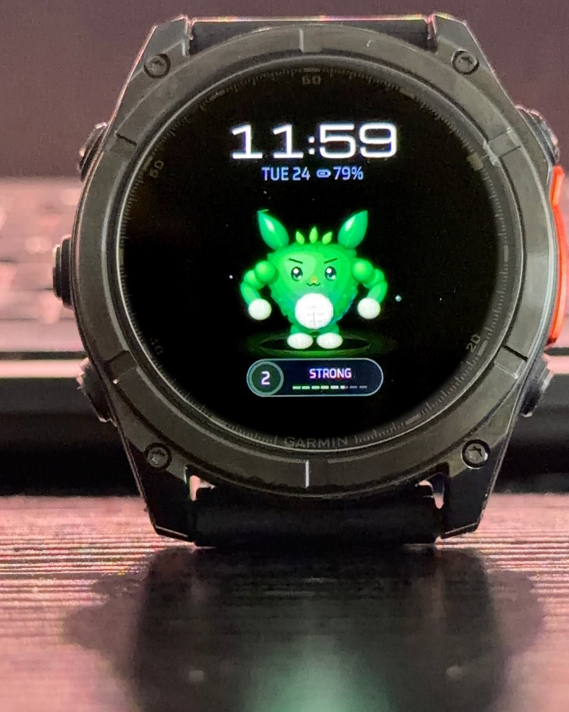
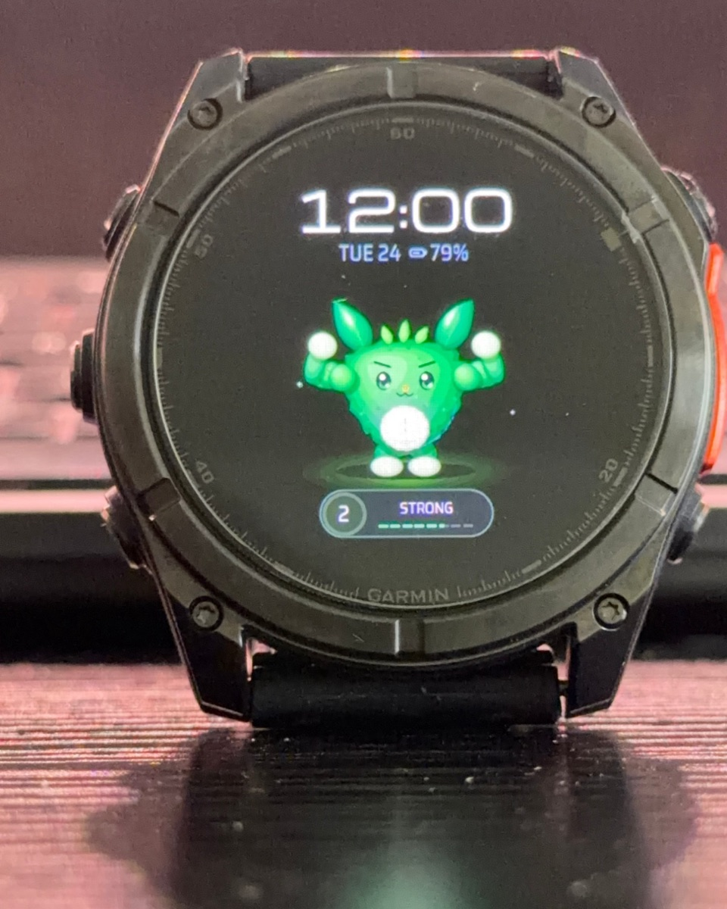
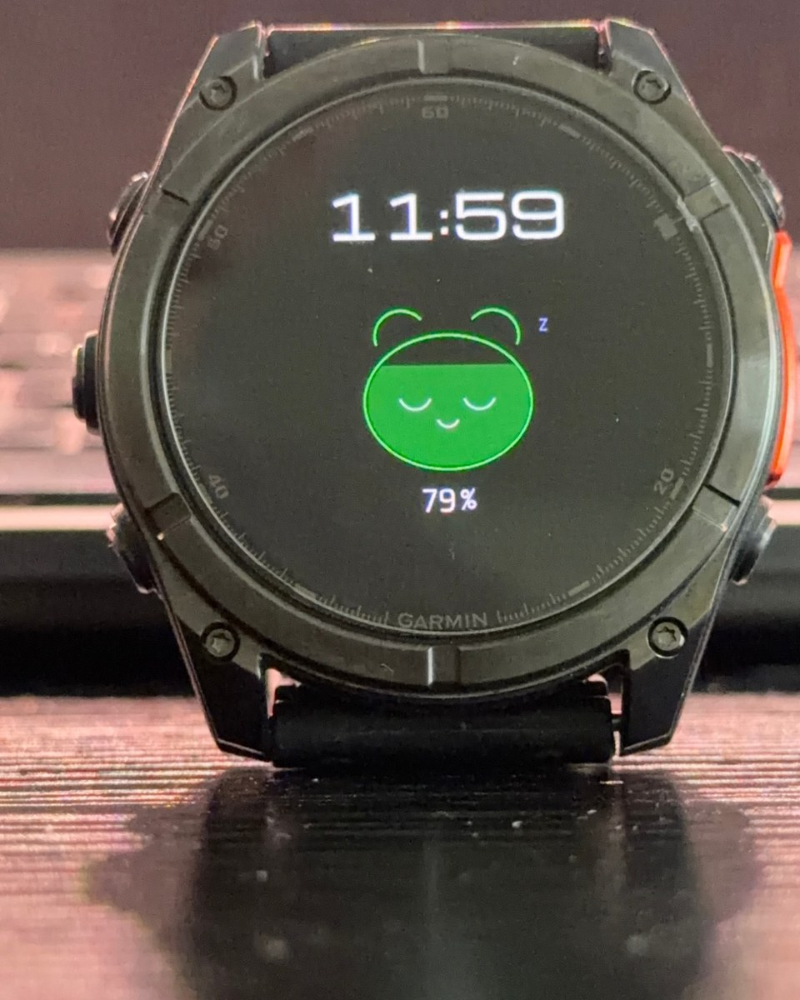

4 of 4 · Free watch face
Your best against theirs.
Pea-k Performance. Keep him happy, keep him healthy, keep him active. A little green pea who grows with your week of movement.

What it does
He starts as a pea pod. Move, and something hatches. He has eleven forms in all, the pod included, up to Pea-st Mode, driven by your last 7 days of steps and active minutes. Good days build him up, quiet days let a little air out, and hard sessions level him up.
Touch and hold him and see what he does. At night he sleeps, and if you wake him up you might catch what he dreams about.
Duel: battles with friends
Go one on one, or gather a small group of 3 to 8. Each of you is measured against your own best, so everyone gets a real shot.
- Pick 3, 7, 14 or 28 days and invite friends with a code, all from the Pea-k settings in Garmin Connect.
- It begins at the first midnight after a friend joins. Wear Pea-k for 4 days first so he knows your best.
- Win and Pea-k grows for a week.
- Finish behind and he shrinks one size for up to 3 days, then he is back. One day at your best brings him back sooner.
Race Day
Training for something? Set your race date, sport and distance, with a goal time or just to finish. Run, ride, swim, or walk and hike.
- Pea-k builds a plan from your own training: build weeks, lighter weeks, then an easy taper into race week.
- While your race is on, his race form only goes up, and race week is Pea-st Mode.
- Sick or sore? Pause it and he holds his shape.
Duel and Race Day are optional and use your phone connection. See Privacy.
On a real watch
Pea-k on a real fenix 8. Tap one to enlarge.





Get it
Free on Connect IQ for round AMOLED watches. Be kind to him, and to yourself. Once he has made you laugh, rate us. Honest ratings welcome, grumpy ones too.
Setup and help
How do I start a Duel?
In the Pea-k settings in Garmin Connect, then invite friends with the code.
Which watches?
Round AMOLED watches: fenix 8 and fenix E AMOLED, epix (Gen 2) and epix Pro, Forerunner 165, 265, 570, 965 and 970, Venu 3 and Venu 4, vivoactive 5 and 6, Instinct 3 AMOLED, Instinct Crossover AMOLED, MARQ (Gen 2), D2 Mach 1 and Mach 2, Approach S70.
Message board
Tell us your stage, what Pea-k did, or cheer someone on. No spoilers about his secret moves, please.
What is next for him
These three are ideas on the drawing board, shown as concept art with sample data.